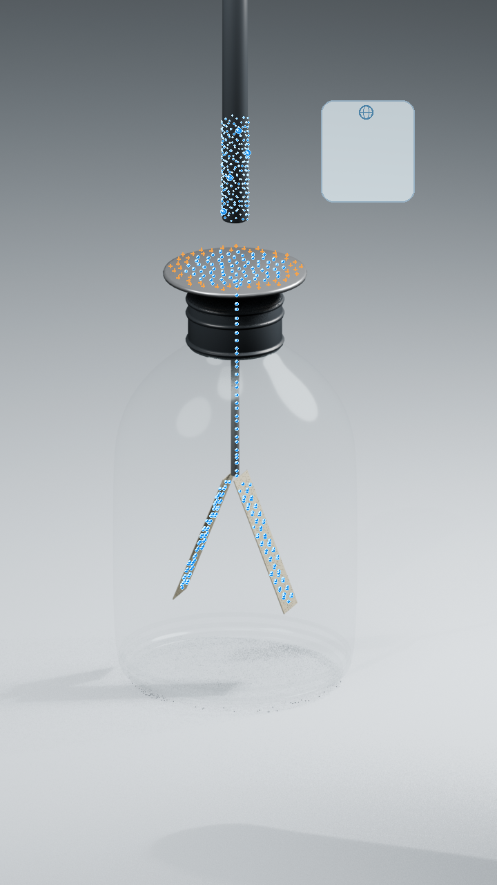
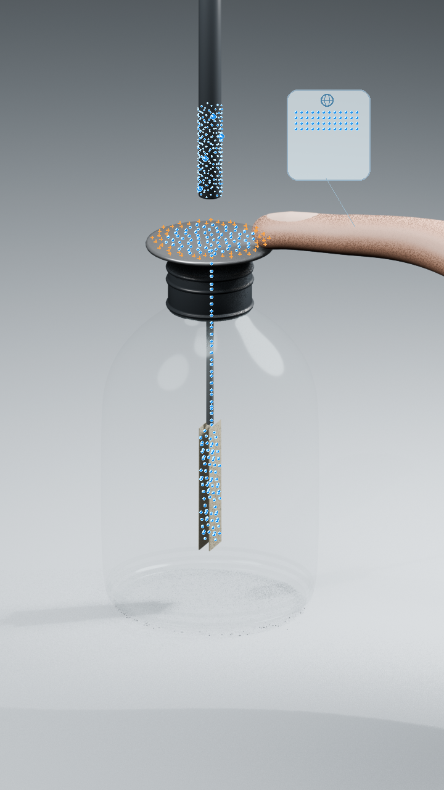
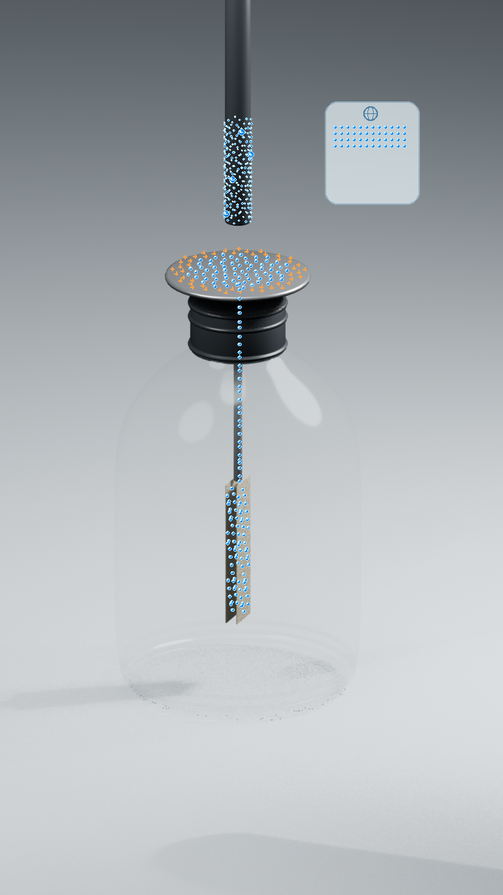
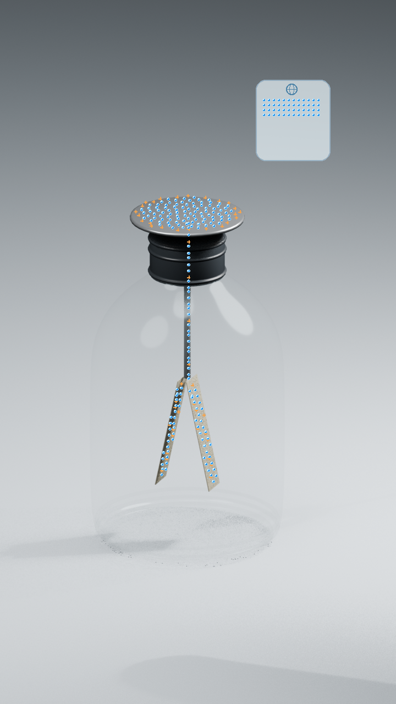

파란 점 · 전자 묶음
도착한 곳에 계속 남습니다. 실제 전자 하나를 확대한 사진이 아니라, 많은 전자를 묶어 보여 주는 표시입니다.
전자는 어디로 갔을까요? 검전기를 접지한 뒤 손과 막대를 치우는 순서만 바꾸어 봅니다. 같은 출발, 다른 결과를 전자의 움직임으로 따라가 보세요.
2026년 9월 6일 · 영상과 제작 중 나눈 질문을 함께 정리했습니다.
먼저 전자의 자리를 따라가요
도착한 곳에 계속 남습니다. 실제 전자 하나를 확대한 사진이 아니라, 많은 전자를 묶어 보여 주는 표시입니다.
전자가 떠나면 +가 드러나고, 돌아와 채우면 없어집니다. + 입자가 금속 속을 이동한다는 뜻은 아닙니다.
전자가 더 많은 플라스틱 막대입니다. 윗판에 닿지 않고 가까이 다가가므로 막대의 전자가 검전기로 건너오지는 않습니다.
손가락은 지구와 이어지는 이상적인 접지 연결입니다. 접지 중 아래 금속박은 중성으로 닫힌다고 단순화했습니다. 실제 유리병 검전기의 정밀한 전하 분포를 그대로 재현한 모형은 아닙니다.
먼저 중성인 검전기에 막대를 가까이 가져갑니다. 윗판에서 아래로 전자가 이동해 두 금속박이 −가 되고 벌어집니다. 위의 +와 아래의 −를 모두 더하면 전체는 아직 중성이에요.
막대를 둔 채 윗판에 손가락을 댑니다. 전자가 지구 쪽으로 빠져나가고, 이 모형의 두 금속박은 중성이 되어 닫힙니다. 윗판에는 +가 남습니다.
손을 대고 있으니 전자가 돌아올 길이 열려 있습니다. 막대를 치우면 전자가 돌아와 검전기가 중성이 됩니다. 그 뒤 손을 떼어도 금속박은 닫혀 있습니다.
전자 출입 통로가 끊깁니다. 막대가 그대로 있을 때는 전하 배치도 유지되어 금속박이 닫혀 있습니다. 막대까지 치우면 남은 +가 윗판·봉·두 금속박에 나뉘고, 두 금속박이 벌어집니다.
접지 순서에 따른 금속박의 기본 반응은 IOP의 정전기 유도 실험 안내에서 확인할 수 있습니다. 아래 숫자와 마지막 각도 비교는 이 영상에서 선택한 모형의 조건입니다.
윗판과 금속박은 이어져 있지만, 각 부분의 전하량은 다를 수 있습니다. 그림의 +와 −가 어디에 남는지 살펴보세요.




이미지는 완성 영상의 장면입니다. 숫자는 전자 묶음 기준의 상대값이며 실제 전하 단위가 아닙니다.
아래 표는 순전하입니다. 0은 전자가 없다는 뜻이 아니라 +와 −가 균형을 이룬다는 뜻이에요. +는 전자 부족, −는 전자 과잉을 나타냅니다.
48, 24, 10은 전하 보존과 분배를 설명하도록 정한 수입니다. 실제 전자 수나 nC 측정값이 아니며, 검전기 형상에서 정밀 계산한 값도 아닙니다.
| 상태 | 윗판 | 봉 | 왼쪽 박 | 오른쪽 박 | 검전기 합계 | 지구 쪽 |
|---|---|---|---|---|---|---|
| 처음 · 중성 | 0 | 0 | 0 | 0 | 0 | 0 |
| 막대 접근 · 접지 전 | +48 | 0 | −24 | −24 | 0 | 0 |
| 손가락으로 접지 | +48 | 0 | 0 | 0 | +48 | −48 |
| ① 막대 먼저 제거 → 손 제거 | 0 | 0 | 0 | 0 | 0 | 0 |
| ② 손 먼저 제거 · 막대 유지 | +48 | 0 | 0 | 0 | +48 | −48 |
| ② 막대까지 제거 · 최종 | +24 | +4 | +10 | +10 | +48 | −48 |
+48 − 24 − 24 = 0
검전기 안에서 전자가 이동했을 뿐, 전체 전하량은 바뀌지 않습니다.
검전기 +48, 지구 쪽 −48.
둘을 합하면 여전히 0입니다. 전자가 사라지거나 새로 생기지 않았습니다.
+24 + 4 + 10 + 10 = +48
손을 뗀 뒤에는 검전기 전체의 +48이 유지됩니다. 밖의 −48도 그대로입니다.
처음 각 금속박의 전하 크기는 24, 마지막은 10으로 정했습니다. 그래서 마지막 금속박을 더 작게 벌려 보여 줍니다. 실제 검전기에서도 항상 마지막 각도가 더 작다는 뜻은 아닙니다. 형상과 대전체의 거리 등을 정해야 실제 전하량과 각도를 구할 수 있습니다.
영상은 전자의 움직임을 따라가고, 여기서는 제작하면서 오래 고민했던 조건들을 하나씩 확인합니다. 궁금한 질문을 펼쳐 읽어 보세요.
윗부분의 둥근 금속판, 가운데 금속 봉, 아래의 두 얇은 금속박은 전자가 오갈 수 있도록 이어진 하나의 도체입니다. 하지만 각 부분의 순전하가 같다는 뜻은 아닙니다. 그래서 이 자료는 전체 전하와 각 부분의 전하를 따로 표시합니다.
접지는 도체를 지구와 연결해 전자의 출입을 허용하는 일입니다. 전위 0과 전하량 0은 다릅니다. 가까운 대전체가 있으면 접지된 도체에도 순전하가 남을 수 있습니다. 영상법의 접지된 무한 평면도 전위는 0이지만 유도 전하량은 0이 아닙니다. 그 특수한 평면의 해를 유한한 금속박에 그대로 적용할 수는 없습니다. Fitzpatrick의 영상법 설명
이 영상에서 접지 중 두 금속박을 각각 0으로 놓은 것은 아래쪽에 대한 교육용 단순화입니다. 윗판의 +까지 없어졌다는 뜻이 아닙니다. 금속박의 순전하가 0이어도 금속박 안에는 전자가 있습니다.
여기서는 손가락과 몸이 지구까지 이어진 이상적인 접지 연결이라고 가정합니다. 접촉 중에는 전자가 드나들고, 손을 떼면 그 통로가 끊깁니다. 몸이 지구와 절연되어 있다면 단지 손이 좋은 도체라는 이유만으로 완전한 접지가 되지는 않습니다. 실제 손의 모양·크기·접촉 상태는 이 모형에서 생략했습니다.
주변 전기장과 도체 형상을 그대로 두고, 접지선 자체의 전기장 영향을 무시한다면 접촉 위치만 바꿔도 정전 평형의 분포는 같습니다. 이상적인 도체 전체가 같은 전위로 연결되기 때문입니다. 실제 선이나 손의 위치를 바꾸면 주변 도체 형상도 달라져 분포가 달라질 수 있고, 연결 직후의 과도 과정도 별개입니다.
유리병은 금속 차폐 상자가 아닙니다. 유리병이 있다는 것만으로 외부 정전기장이 완전히 차단되지는 않습니다. 아래 금속박 공간이 차폐된 경우도 논의했지만, 최종 영상에는 별도의 차폐판을 넣지 않았습니다.
특히 손을 떼는 동작에 큰 도체 차폐판이 사라지는 효과까지 넣으면, 접지 연결만 끊는 문제와 달라집니다. 실제 차폐체를 치우면 전하가 재배치될 수 있습니다. 이번 영상은 그 효과를 포함하지 않고, 접지 중 금속박이 중성으로 닫힌다는 장면을 단순화된 조건으로 둡니다. Feynman 5장: 도체와 차폐
주변 형상과 대전체가 그대로이고 접지 연결만 끊는 이상적인 경우, 직전의 평형 분포가 그대로 유지될 수 있습니다. 그래서 손을 뗀 직후 금속박을 다시 벌리는 장면을 삭제했습니다.
전자가 막대에 붙잡혀 움직일 능력을 잃는다는 뜻은 아닙니다. 전자는 여전히 움직일 수 있지만 분포를 바꿀 새로운 조건이 생기지 않은 것입니다. 그다음 막대를 치우면 외부 전기장이 달라져 검전기 내부에서 전자가 재배치됩니다. 이 설명은 고정된 형상에서의 정전 평형 조건을 적용한 것입니다.
윗판·봉·금속박에 나뉘어 남는다고 이해하면 됩니다. 모든 곳에 같은 밀도로 퍼지는 것은 아닙니다. 도체가 같은 전위를 갖더라도 모양과 굽은 정도에 따라 표면 전하밀도는 달라집니다. 영상의 + 표시는 전자 부족을 보여 주는 기호이며, 원자핵이 표면을 따라 이동한다는 뜻은 아닙니다. IOP의 도체 표면 전하 분포 설명
이번 영상은 각 금속박의 상대 전하 크기를 처음 24, 마지막 10으로 정해 마지막을 더 작게 벌렸습니다. 남은 전하가 다른 부분에도 나뉜다는 생각을 보여 주는 선택입니다.
실제 검전기의 최종 전하량과 각도는 대전체의 전하·거리, 금속판과 금속박의 형상, 금속박의 질량, 차폐 조건에 따라 달라집니다. 같은 전하량이라도 분포와 외력이 달라지면 힘이 달라질 수 있습니다. 따라서 이 영상의 각도 순서를 모든 검전기의 법칙으로 일반화하지 않습니다.
외부 대전체가 만드는 전위를 구하는 것은 좋은 출발점입니다. 정확한 분포를 얻으려면 검전기에서 유도된 전하가 만드는 전위까지 합쳐야 합니다. 접지 중에는 지구와 같은 전위, 접지를 끊은 뒤에는 보존된 총전하라는 서로 다른 조건을 적용합니다. Feynman 6장: 전위로 전기장 구하기
거리만으로 금속박 각도가 하나로 정해지지는 않습니다. 처음 중성인지, 이미 접지해 대전시켰는지, 지금도 접지 중인지가 함께 필요합니다. 거리에 따른 변화 역시 이 조건들을 구분해서 비교해야 합니다.
검전기와 지구 쪽 표시를 합쳐 전자 묶음 230개에 각각 고정 번호를 부여했습니다. 이동 중에도 번호를 유지하며, 밖으로 나간 48개는 오른쪽 지구 표시 쪽에 남습니다. 실제 지구에서 전자가 한곳에 뭉쳐 있다는 뜻은 아닙니다. 검은 막대의 표식 250개는 별도로 유지하며 검전기로 건너오지 않습니다.
85초 영상의 2,550개 프레임에서 전자 표식의 보존을 확인했습니다. 다만 표면을 따라 움직이는 경로와 속도는 눈으로 따라가기 위한 표현이며, 실제 개별 전자의 궤적이나 이동 시간을 계산한 것은 아닙니다.
차폐판의 유무 등 서로 다른 가정을 사용한 초기 계산값은 이번 영상의 확정값에서 제외했습니다. 현재 표는 전하 보존과 장면별 이동을 설명하도록 정한 상대값입니다. 사진 속 검전기의 치수와 재료를 측정해 얻은 정밀 전기장 해석 결과가 아닙니다.
그 결과, 확인된 전하 보존과 교육용으로 선택한 전하 분배를 분리해 제시합니다. 계산 가능한 숫자라는 이유만으로 실제 장치의 측정값처럼 쓰지 않았습니다.